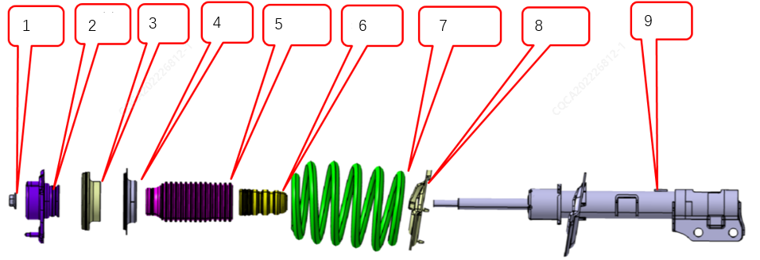
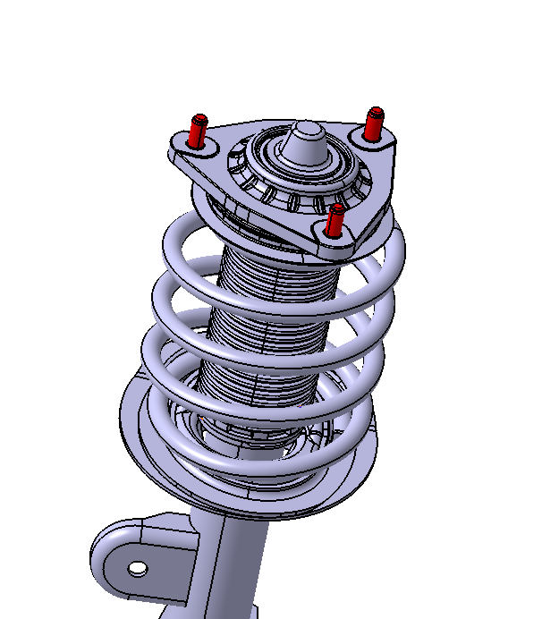
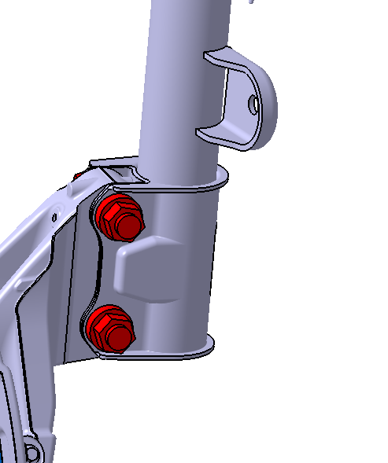

Функция
Установка на опоры автомобиля, гашение дорожных вибраций и ударов, обеспечение управления колесами.
Принцип работы
Когда автомобиль во время движения сталкивается с ударами, пружина поглощает их энергию и временно запасает ее в виде потенциальной энергии, а после удара высвобождает эту энергию в виде кинетической энергии, при этом кузов совершает колебания на пружине. Амортизатор во время возвраттно-поступательного движения пружины создает определенное демпфирующее усилие для быстрого затухания колебаний пружины. За счет демпфирующего усилия амортизатора колебания автомобиля быстро затухают. Амортизатор преобразует кинетическую энергию колебаний кузова в тепловую энергию, которая поглощается жидкостью и затем рассеивается через корпус в атмосферу.
Конструкция изделия
Амортизатор передней стойки состоит из: 1. Самоконтрящаяся гайка 2. Узел верхней опоры 3. Узел подшипника 4. Верхняя прокладка пружины 5. Пыльник 6. Буферный элемент 7. Задняя винтовая пружина 8. Нижняя прокладка пружины 9. Амортизатор в сборе и т. д. Подробная конструкция показана на рисунке

1. Верхний конец стойки в сборе крепится к Кузов с помощью трех болтов верхней опоры, момент затяжки гаек составляет 85 ± 5 N.m.

2. Нижний конец стойки в сборе соединяется с поворотным кулаком через U-образный кронштейн амортизатора с помощью болтов и гаек, момент затяжки гаек составляет 250 ± 20 N.m.

Неисправности изделия и устранение
Сначала выполнить внешний осмотр передней стойки, Подтвердить отсутствие утечки масла на передней стойке; подробное определение утечки масла из амортизатора см. в Проверка утечки масла из передней стойки, выделение масла амортизатором не приводит к появлению постороннего шума. Только при сильной утечке масла, когда внутри амортизатора теряется большая часть жидкости, появляется глухой стук ("туц-туц").
Затем проверить на ослабление верхние и нижние болты и гайки крепления передней стойки; если ослабления нет, проверить переднюю стойку на отсутствие помех (задевания) с окружающими Компонент, а также проверить внутренние и внешние детали передней стойки на наличие следов трения и помех. Если аномалии все еще не обнаружены, можно использовать взаимную замену (метод кросс-тестирования ABA), чтобы Подтвердить, что неисправна именно передняя стойка.